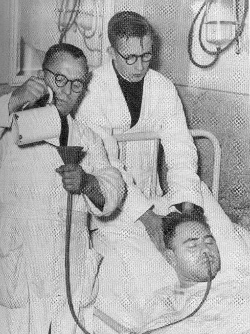
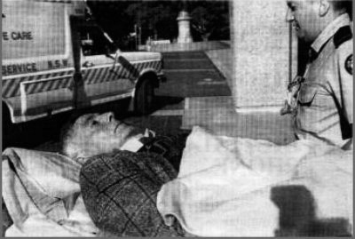
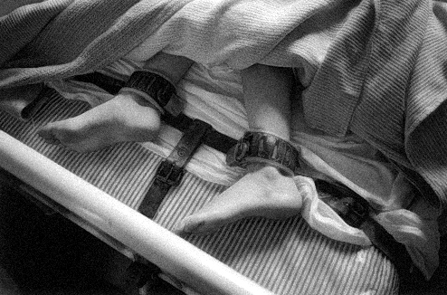

Our Views On The Scandal
What we think about Harry Bailey, his methods of treating patients and the fate of the individuals that were admitted into his care at Chelmsford
In 1963, Chelmsford Private Hospital opened its doors for the very first time under the control of Dr. Harry Bailey, (O'Neill & Haupt, 1988). The small private Hospital located in Pennant Hills, New South Wales, (Little, 1994) offered new treatments targeted to cure depressive illnesses and those affected by drug and alcohol addiction (Public Interest Advocacy Centre, 2013). This treatment was known as deep sleep therapy, and was both very new and experimental at the time. Dr. Bailey, a psychiatrist, treated thousands of patients with deep sleep therapy, most against their will, which resulted in at least 12 recorded deaths, and a large number of the patients leaving with brain damage, paralysis and other associated injuries (Public Interest Advocacy Centre, 2013). Eventually, the world discovered the tragic truth of the hospital and Chelmsford became one of the worst medical scandals to be recorded. This wiki page will show how Dr. Harry Bailey is completely at fault for the mistreatment and the severe outcome that were faced by patients under his treatment. It has been acknowledged that he strongly believed that his treatments would work, however it is difficult to look beyond Dr. Bailey's failure to review his work after the occurrence of the first death or, the fact that he continuously took advantage of, and mislead his patients.
Had this treatment been successful, Dr. Bailey would have become highly recognised for curing addictive and depressive conditions. Thus changing the lives of thousands of people, not just in Australia, but also around the world. However, this was not the case.
Not one patient who underwent Deep Sleep therapy was better off upon discharge. Despite numerous patients dying from the therapy or obtaining severe adverse effects both physically and/or mentally, Dr. Harry Bailey continued to administer DST. It is understandable that all successful therapies and treatments start out as just a theory. In order to prove credibility, the treatment must be trialled to ensure safety and efficacy. However, the length of time that progressed without review despite mortalities and sickness should have been enough to disprove his therapy. If Dr Bailey had of stopped treatment countless lives may have been saved.
Dr. Bailey wholeheartedly believed that the treatment he offered would be effective. He became increasingly obsessed with his work and felt superior to the patients and would undermine those who refused treatment. Non-compliant patients were strapped to beds, or given sedatives to help them "calm down", were admitted into his hospital and subjected to therapy (Geason, 2007; Little, 1994). Dr. Bailey took advantage of the most vulnerable and betrayed their trust. In addition to DST, Bailey also sought the help of a fellow doctor whom administered a second form of treatment known as Electroconvulsive Shock Therapy (ECT) (Geason, 2007). Which further endangered his patients. This treatment was again carried out without written or verbal consent.
Whilst under Baileys care, patients were often mistreated. A number of ex-patients and nurses have since reported that naked men and women were forcibly strapped to beds and treated in the same room (Public Interest Advocacy Centre, 2013). Patients were forced to urinate in their own beds and assured it would be cleaned up however they would remain lying in their own excrement for hours to days (Wilson, 1993). There have also been claims that other doctors that worked at the Chelmsford Hospital alongside Bailey would sexually abuse the female patients whilst they were in their comatose state.
It was not only Dr Harry Bailey and his colleagues that violated the patients of Chelmsford. The medical system must hold some responsibility for lack of strict regulations on experimental therapies. The scandal continued for over two decades before the public became aware of the scandal that was Chelmsford hospital and the reason for its closure (Public Interest Advocacy Centre, 2013). The fact there were no reviews of Dr. Bailey's work is what allowed the mistreatment of his patients to continue for so long.
Although Bailey had good intentions, his actions were unforgivable. The loss of life and damage caused to his patients was devastating. Dr. Harry Bailey was a negligent doctor who abused his position and education to take advantage of patients. The victims of the Chelmsford scandal should never have been subjected to such extreme experimental conditions that have since been shown to be ineffective and extremely harmful, especially without gaining consent. The Chelmsford Scandal was a tragedy that should not have occurred and could have been avoided.